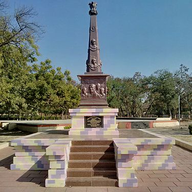

To succeed in an environment of growth and excellence and earn a job which provides
me job satisfaction ans sekf development and help me achive personal as well as
organization goals.
Educational Qualification
Qualification
Board/University
School/College
Year of passing
Marks
B.TECH(CSE)
WCE Sangli
WCE Sangli
2023
7.54
12th
MSBSHSE
Bharat Bharati High School Parbhani
2018
74.63%
10th
SSC
NVVS Marathwada Highschool Parbhani
2016
92.74%
Technical Skills
C
C++
Python
Java
Strength
Good communication skill
Good team player
Self motivated
Hobbies
Playing cricket
Tracking
Reading
Languages Known
Marathi
English
Hindi
Projects
Expense Tracker
Ornament Detection Using YOLO
My Intro
About My Hometown

Parbhani is a city in Maharashtra state of India. It is the administrative headquarters of Parbhani District. Parbhani is one of the largest cities in Marathwada region of Maharashtra after Aurangabad and Nanded. Parbhani is around 200 kilometres away from regional headquarters of Aurangabad while it is 491 km away from the state capital Mumbai.
Along with the entire Marathwada region, Parbhani was a part of the erstwhile Nizam State; later a part of Hyderabad State; after reorganization of states in 1956 it became a part of the then-Bombay state; since 1960, it has been part of the present Maharashtra state.
Parbhani is home to Vasantrao Naik Marathwada Agricultural University, which is one of only four agriculture universities in Maharashtra. Moreover, Parbhani also has an annual festival at Turabul Haq Dargah, which attracts lakhs of tourists each year. Parbhani is named after Goddess Prabhavati.
Declaration
I hereby declare that every information is true and I am solely responsible
for its authenticty.